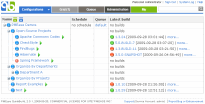

Introduction

Luntbuild professional PREVIEW3 released with the ability to build .NET projects through NAnt, as well as support for Accurev, MySQL, database backup and restore. Luntbuild is a powerful build automation and management tool. Continuous Integration or nightly builds can be easily set using a clean web interface. Executed builds are well managed using functions such as search, categorization, promotion, patching, deletion, etc. It also acts as a central build artifacts repository and download area for your whole team. Why Luntbuild?You may ask why Luntbuild, while there are already many good build automation tools such as Cruise Control, Anthill, and others. Our answer is:
powered by
|